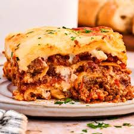

Lasagna

Description
Lasagna is a classic Italian baked dish featuring alternating layers of flat,
wide pasta sheets, savory sauces (typically ragù and béchamel),
and cheeses like mozzarella and Parmesan
Originating from Emilia-Romagna, it is commonly prepared as a rich, layered casserole,
known for being a satisfying, bubbly, and savory comfort food.
Ingredients
- Butter for greasing
- 2 ½ cups Ragù
- 1 pound fresh mozzarella torn into 1-inch pieces
- 3 hard-cooked eggs finely chopped
- 2 cups bechamel
- 2 cups finely grated Parmigiano-Reggiano
- Sfoglia all'Uovo cut into 4 sheets measuring the size of your baking dish
Steps:
- Preheat the oven to 375ºF. Grease a 9- x 13-inch baking dish with butter.
-
Spoon a ½ cup layer of ragù on the bottom of the baking dish. Place a pasta sheet on top.
There's no need to cook the pasta in advance. It will cook in the juices of the ragù.
- Spoon another ½ cup of ragù over the pasta.
Distribute ¼ of the mozzarella, ¼ of the chopped eggs, ½ cup of bechamel,
and ½ cup of Parmigiano-Reggiano evenly over the tray.
-
Repeat the pasta, ragù, mozzarella, egg, béchamel,
and Parmigiano-Reggiano layering three more times.
-
Layer the remaining ragù, mozzarella, bechamel,
and Parmigiano-Reggiano over the final pasta layer.
-
Cover the baking dish with aluminum foil and bake for 30 minutes
-
Uncover the baking dish, then continue baking
until the edges of the pasta are curled up and browned, 30 to 40 more minutes.
-
Allow the lasagna to rest for about 30 minutes before serving in slices.
Home